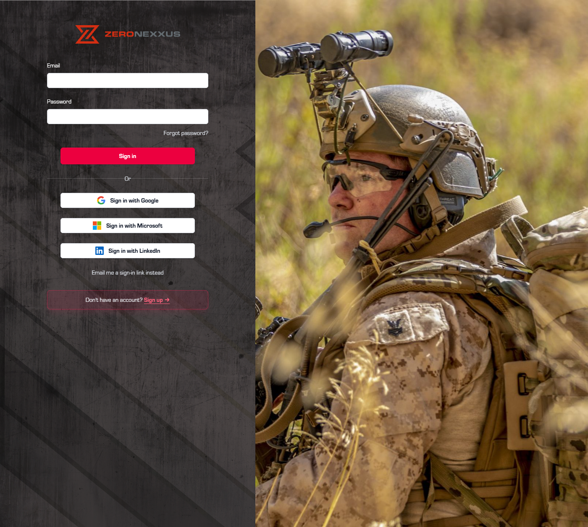

01
Private client work

Zero Nexxus
Client operations platform
A Rails and Inertia application for managing a sensitive client-service workflow. I built and extended superadmin tools for client profiles, onboarding, documents, tasks, scheduling, and internal operations.
- Role-aware client and administrative workflows
- Calendly-backed call scheduling and completion history
- Stripe, MFA, email, and document-management integrations